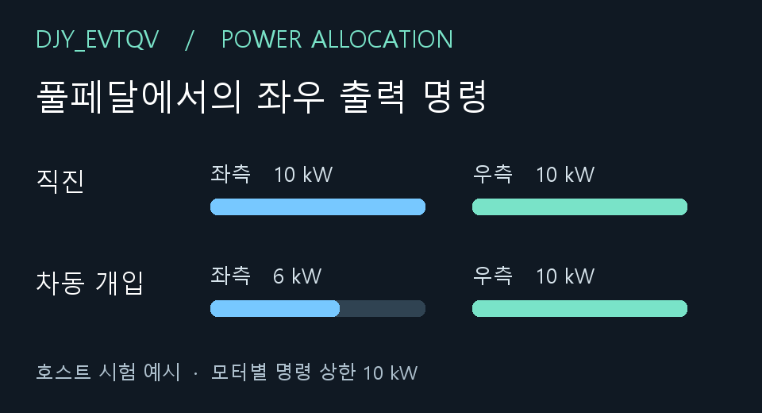

아세토 코르사 텔레메트리 · ASC_TLMTSYS
시뮬레이터의 UDP 데이터를 수집해 피트 화면에서 속도, 기어, 타이어 상태를 읽도록 만든 개인 프로젝트입니다. 이후 실차 텔레메트리 개발의 기반이 됐습니다.
데모와 주행 분석 · 저장소시뮬레이터의 UDP 데이터를 수집해 피트 화면에서 속도, 기어, 타이어 상태를 읽도록 만든 개인 프로젝트입니다. 이후 실차 텔레메트리 개발의 기반이 됐습니다.
데모와 주행 분석 · 저장소조선대학교 IT융합대학 전자공학과 이준혁이 개발한 DJY_speedmeter를 계승해 바하 텔레메트리를 진행했습니다. 이 작업은 아세토 코르사 프로젝트와 함께 EV 텔레메트리로 이어졌습니다.
이준혁의 원작 DJY_speedmeter · 바하 후속 프로젝트후방 STM32, ESP32, BMS와 휴대폰 GPS의 데이터를 수집·저장합니다. 피트에서 주행 기록을 분석해 토크벡터링 개선에 활용했습니다.
실차 RPM 기록 보기토크벡터링에는 조선대학교 공과대학 전기공학과 박성우, 정민기, 오하은, 황주헌이 참여했습니다. 제 역할은 EV 텔레메트리로 주행 데이터를 확보하고 팀의 제어 시스템에 개선점을 반영하는 일이었습니다.
아래 그림은 개선한 출력 배분 로직의 호스트 시험 예시입니다. 20 kW는 좌우 합계 출력 명령값이며, 이 설정의 실차 출력 측정은 남아 있습니다.

휴대폰에서 차량 게이트웨이의 핫스팟 정보를 바꾸고, 연결이 끊겨도 보드 버튼으로 설정을 복구할 수 있도록 구현했습니다. ESP32-S3 R8 빌드 완료 후 보드 적용과 휴대폰 접속 시험을 앞두고 있습니다.
Windows에서 USB 포트를 검색하고 ESP32-S3 칩의 응답을 확인해 업로드 대상을 선택하는 도구입니다.
EV 주행 세션별 CSV와 검증 스크립트를 관리합니다. 대표작의 좌우 RPM 그래프는 이 중 여섯 번째 세션의 기록으로 작성했습니다.
RB7 V8과 Ferrari F2001 V10의 가상 배기음을 브라우저에서 재생할 수 있습니다. 다음 단계는 ESP와 오디오 보드를 차량 스피커에 연결하는 것입니다.
두 차량의 엔진음 듣기 · 개발 계획운영 매뉴얼과 간편한 배포 절차를 갖춰 현재도 운용 중입니다.
대표작 상세 · 운영 매뉴얼주점의 주문과 서빙을 연결하는 시스템을 공동 개발해 축제 현장 운영을 성공적으로 마쳤습니다.
현장 운영과 평가PC 키오스크와 아이폰 웹앱에서 접수한 주문을 한 주방 화면에서 처리하는 과제 발표용 프로젝트입니다.
프로젝트 저장소군 복무 중 프런트 체크인 업무와 함께 한식당 예약 업무를 자동화했습니다.
개발 경험 보기